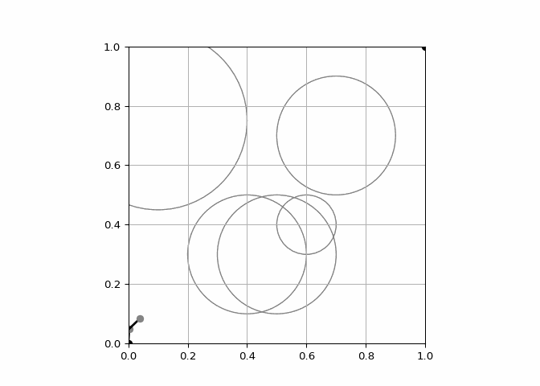
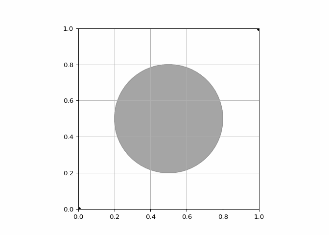
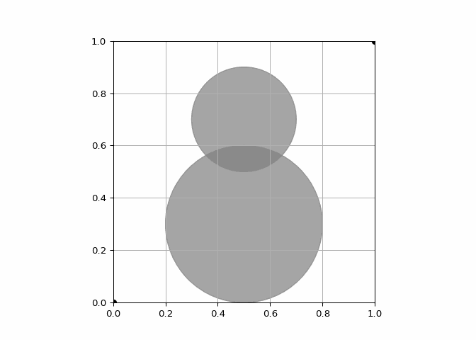
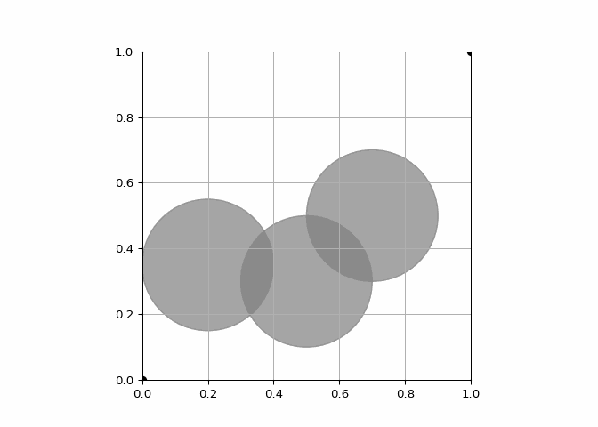

The path plan should actually work on a robot. If the path plan makes the robot turn at sharp angles but the robot can’t move at sharp angles (like a car), that path plan shouldn’t be allowed.
The path plan should be as close to optimal as possible. While it’s nice to find any path plan that gets the robot from a start location to a goal location, that isn’t enough unfortunately. We’d like something that’s somewhat efficient. Not only will it help the robot complete its task as fast as possible, but it’ll also conserve its precious battery life.
The path plan should avoid colliding with walls. This obviously goes without saying. Robots can be pretty expensive, and crashing is never a good thing. My little robot alone cost me well over a thousand bucks.
One of the most popular algorithms for coming up with a path plan that tries to satisfies these conditions is called Rapidly-exploring Random Trees (RRT). Since a picture is worth a thousand words, check out the diagram below. Let’s suppose the robot has to go from a start location (the red dot) to a goal location (the green dot) in a simple map without any obstacles. Basically, we’ll start off with a tree that has a root node representing the start position of the robot. After that, we’ll build the tree up gradually. How? We’ll take a bunch of random samples of the map, make a new node for each random sample, and insert each new node into the tree somehow. Once the tree has a node that’s close enough to the goal position of the robot, we’re done.
Here we are using the RRT algorithm to perform motion planning in 2-DoF environments. As before, the mobile robot’s position is \(\normalsize \theta = [𝑥, 𝑦]^𝑇\).
Implementing the RRT algorithm below. This code should be able to work with an arbitrary number of circular obstacles with 2 conditions:
• The bounds of the workspace are \(\normalsize 𝑥 ∈ [0, 1], \, 𝑦 ∈ [0, 1]\) • The motion plan must end within \(\normalsize \epsilon = 0.1\) units of the goal
Code Implementation
Code
import numpy as npimport matplotlibmatplotlib.use('Agg') # Set the backend to a non-interactive backendimport matplotlib.pyplot as pltfrom matplotlib.patches import Circlefrom matplotlib.animation import PillowWriter, FuncAnimation# Define start and goal positionstheta_start = {'coord': np.array([0, 0]), 'parent': None}theta_goal = np.array([1, 1])# Workspace boundsx_bounds = [0, 1]y_bounds = [0, 1]# Define obstaclesobstacles = np.array([ [0.5, 0.3, 0.2], [0.7, 0.7, 0.2], [0.6, 0.4, 0.1], [0.4, 0.3, 0.2], [0.1, 0.75, 0.3]])# RRT parametersepsilon =0.1# Goal thresholddelta =0.05# Step sizeN =1000# Number of iterations# Initialize treeG = [theta_start]# Visualize environment setupfig, ax = plt.subplots()ax.grid(True)ax.set_xlim(x_bounds)ax.set_ylim(y_bounds)ax.set_aspect('equal')# Plot obstaclesfor obstacle in obstacles: circle = Circle(obstacle[0:2], obstacle[2], color='gray', fill=False) ax.add_patch(circle)# Plot start and goalstart_plot, = ax.plot(theta_start['coord'][0], theta_start['coord'][1], 'ko', markerfacecolor='k')goal_plot, = ax.plot(theta_goal[0], theta_goal[1], 'ko', markerfacecolor='k')# This flag is used to stop the animation once the goal is reachedgoal_reached =False# Animation update functiondef update(frame):global G, goal_reachedif goal_reached:return theta_rand = theta_goal if np.random.rand() <0.2else np.random.rand(2) distances = [np.linalg.norm(node['coord'] - theta_rand) for node in G] theta_near_index = np.argmin(distances) theta_near = G[theta_near_index] vec_to_rand = theta_rand - theta_near['coord'] vec_to_rand = delta * vec_to_rand / np.linalg.norm(vec_to_rand) theta_new = {'coord': theta_near['coord'] + vec_to_rand, 'parent': theta_near_index}ifnot is_collision(theta_new['coord'], obstacles): G.append(theta_new) ax.plot([theta_near['coord'][0], theta_new['coord'][0]], [theta_near['coord'][1], theta_new['coord'][1]], 'k-', linewidth=2) ax.plot(theta_new['coord'][0], theta_new['coord'][1], 'o', color='gray', markerfacecolor='gray')if np.linalg.norm(theta_new['coord'] - theta_goal) < epsilon:# Draw the final path in orange current = theta_newwhile current['parent'] isnotNone: parent = G[current['parent']] ax.plot([current['coord'][0], parent['coord'][0]], [current['coord'][1], parent['coord'][1]], color='orange', linewidth=3) current = parent goal_reached =True# Collision checking functiondef is_collision(coord, obstacles):returnany(np.linalg.norm(coord - obstacle[0:2]) < obstacle[2] for obstacle in obstacles)# Create the animationani = FuncAnimation(fig, update, frames=N, repeat=False)# Save the animation as a GIFgif_path ="RRT_main.gif"writer = PillowWriter(fps=20)ani.save(gif_path, writer=writer)# Close the plotplt.close()
MATLAB Implementation
clearcloseall% Define start and goal positionstheta_start.coord= [0;0];theta_goal= [1;1];% Workspace boundsx_bounds= [0,1];y_bounds= [0,1];% Define obstacles% Each row is an obstacle with format: [center_x, center_y, radius]obstacles= [0.5,0.3,0.2;0.7,0.7,0.2;0.6,0.4,0.1;0.4,0.3,0.2;0.1,0.75,0.3;% Add as many obstacles required, satisfying the condition of arbitrary% number of obstacles' inclusion];% RRT parametersepsilon=0.1;% Goal thresholddelta=0.05;% Step sizeN=1000;% Number of iterations% Visualize environmentfigureholdongridonaxis([x_bounds,y_bounds])axisequal% Plot obstaclesfori=1:size(obstacles,1)viscircles(obstacles(i,1:2),obstacles(i,3),'Color', [0.5,0.5,0.5]);end% Initialize treetheta_start.parent=0;G(1) =theta_start;% Main RRT loopforidx=1:Nifnorm(G(end).coord-theta_goal) <epsilonbreakend% Random sampletheta_rand=rand(2,1);% Nearest node [min_dist,theta_near_index] =min(vecnorm([G.coord] -theta_rand));theta_near=G(theta_near_index);% Step towards random samplevec_to_rand=theta_rand-theta_near.coord;ifnorm(vec_to_rand) >deltavec_to_rand=delta*vec_to_rand/norm(vec_to_rand);endtheta_new.coord=theta_near.coord+vec_to_rand;% Collision check with all obstaclesifisCollision(theta_new.coord,obstacles)continue;end% Add new node to treetheta_new.parent=theta_near_index;G= [G,theta_new];% Plottingplot(theta_new.coord(1),theta_new.coord(2),'o','Color', [0.5,0.5,0.5],...'MarkerFaceColor', [0.5,0.5,0.5]);line([theta_near.coord(1),theta_new.coord(1)], [theta_near.coord(2),theta_new.coord(2)],'Color','k','LineWidth',2);end% Trace back pathchild_theta=G(end);whilechild_theta.parent~=0parent_theta=G(child_theta.parent);line([child_theta.coord(1),parent_theta.coord(1)], [child_theta.coord(2),parent_theta.coord(2)],'Color', [1,0.5,0],'LineWidth',3);child_theta=parent_theta;end% Plot start and goalplot(theta_start.coord(1),theta_start.coord(2),'ko','MarkerFaceColor','k');plot(theta_goal(1),theta_goal(2),'ko','MarkerFaceColor','k');% Collision checking functionfunctioncollision=isCollision(coord,obstacles)collision=any(arrayfun(@(idx) norm(coord-obstacles(idx,1:2)') <obstacles(idx,3),1:size(obstacles,1)));end
Result

Notice that centers is a matrix where each column corresponds to an obstacle center. Similarly, radii is a vector where the \(\normalsize 𝑖^{th}\) entry corresponds to the radius of the \(\normalsize 𝑖^{th}\) obstacle.
Environment 1: One obstacle with \(\normalsize center \; 𝑐_1 = [0.55, 0.5]^𝑇 \; and \; radius \; 𝑟_1 = 0.3\).
RRT Algorithm for 1 Obstacle
Code
import numpy as npimport matplotlibmatplotlib.use('Agg') # Set the backend to a non-interactive backendimport matplotlib.pyplot as pltfrom matplotlib.patches import Circlefrom matplotlib.animation import PillowWriter, FuncAnimation# Environmenttheta_start = {'coord': np.array([0, 0])}theta_goal = {'coord': np.array([1, 1])}centers = np.array([[0.5], [0.5]])radii = np.array([0.3])# Parametersepsilon =0.1delta =0.1N =1000# Initialize figurefig, ax = plt.subplots()ax.grid(True)ax.set_xlim(0, 1)ax.set_ylim(0, 1)ax.set_aspect('equal', adjustable='box')# Draw obstaclesfor idx inrange(len(radii)): circle = Circle(centers[:, idx], radii[idx], color=[0.5, 0.5, 0.5], alpha=0.7) ax.add_patch(circle)# Plot start and goalax.plot(0, 0, 'ko', markerfacecolor='k')ax.plot(1, 1, 'ko', markerfacecolor='k')# Initialize treetheta_start['parent'] =NoneG = [theta_start]final_path_plotted =Falsedef update(frame):global G, final_path_plottedif frame ==0or final_path_plotted:return# Sample random joint position theta_rand = np.random.rand(2)# Find node in G nearest to theta_rand dist = [np.linalg.norm(node['coord'] - theta_rand) for node in G] theta_near_index = np.argmin(dist) theta_near = G[theta_near_index]# Take a step from theta_near towards theta_rand vec_to_rand = theta_rand - theta_near['coord'] dist_to_rand = np.linalg.norm(vec_to_rand) theta_new = {}if dist_to_rand < delta: theta_new['coord'] = theta_randelse: theta_new['coord'] = theta_near['coord'] + delta * vec_to_rand / dist_to_rand# Check if theta_new is collision-free collision =Falsefor jdx inrange(len(radii)): center = centers[:, jdx] radius = radii[jdx]if np.linalg.norm(theta_new['coord'] - center) < radius: collision =Truebreakif collision:return# If collision-free, add theta_new to tree with parent theta_near theta_new['parent'] = theta_near_index G.append(theta_new)# Plot node and edge ax.plot(theta_new['coord'][0], theta_new['coord'][1], 'o', color=[0.5, 0.5, 0.5], markerfacecolor=[0.5, 0.5, 0.5]) ax.plot([theta_near['coord'][0], theta_new['coord'][0]], [theta_near['coord'][1], theta_new['coord'][1]], 'k-', linewidth=2)# If goal is close enough to the last node in G, plot the final pathif np.linalg.norm(G[-1]['coord'] - theta_goal['coord']) < epsilon: next_theta = G[-1]while next_theta['parent'] isnotNone: prev_theta = G[next_theta['parent']] line, = ax.plot([next_theta['coord'][0], prev_theta['coord'][0]], [next_theta['coord'][1], prev_theta['coord'][1]], 'orange', linewidth=3) next_theta = prev_theta# Add final path to the animation final_path_plotted =Truereturn line,# Create the animationani = FuncAnimation(fig, update, frames=N, repeat=False)# Save the animationwriter = PillowWriter(fps=20)ani.save("RRT_1_obstacles.gif", writer=writer)
Result:

Environment 2: One obstacle with \(\normalsize center \; 𝑐_1 = [0.5, 0.3]^𝑇 \; and \; radius \; 𝑟_1 = 0.3\). A second obstacle with \(\normalsize center \; 𝑐_2 = [0.5, 0.7]^𝑇 \; and \; radius \; 𝑟_2 = 0.2\)
RRT Algorithm for 2 Obstacles
Code
import numpy as npimport matplotlibmatplotlib.use('Agg') # Set the backend to a non-interactive backendimport matplotlib.pyplot as pltfrom matplotlib.patches import Circlefrom matplotlib.animation import PillowWriter, FuncAnimation# Environmenttheta_start = {'coord': np.array([0, 0])}theta_goal = {'coord': np.array([1, 1])}centers = np.array([[0.5, 0.5], [0.3, 0.7]])radii = np.array([0.3, 0.2])# Parametersepsilon =0.1delta =0.1N =1000# Initialize figurefig, ax = plt.subplots()ax.grid(True)ax.set_xlim(0, 1)ax.set_ylim(0, 1)ax.set_aspect('equal', adjustable='box')# Draw obstaclesfor idx inrange(len(radii)): circle = Circle(centers[:, idx], radii[idx], color=[0.5, 0.5, 0.5], alpha=0.7) ax.add_patch(circle)# Plot start and goalax.plot(0, 0, 'ko', markerfacecolor='k')ax.plot(1, 1, 'ko', markerfacecolor='k')# Initialize treetheta_start['parent'] =NoneG = [theta_start]final_path_plotted =Falsedef update(frame):global G, final_path_plottedif frame ==0or final_path_plotted:return# Sample random joint position theta_rand = np.random.rand(2)# Find node in G nearest to theta_rand dist = [np.linalg.norm(node['coord'] - theta_rand) for node in G] theta_near_index = np.argmin(dist) theta_near = G[theta_near_index]# Take a step from theta_near towards theta_rand vec_to_rand = theta_rand - theta_near['coord'] dist_to_rand = np.linalg.norm(vec_to_rand) theta_new = {}if dist_to_rand < delta: theta_new['coord'] = theta_randelse: theta_new['coord'] = theta_near['coord'] + delta * vec_to_rand / dist_to_rand# Check if theta_new is collision-free collision =Falsefor jdx inrange(len(radii)): center = centers[:, jdx] radius = radii[jdx]if np.linalg.norm(theta_new['coord'] - center) < radius: collision =Truebreakif collision:return# If collision-free, add theta_new to tree with parent theta_near theta_new['parent'] = theta_near_index G.append(theta_new)# Plot node and edge ax.plot(theta_new['coord'][0], theta_new['coord'][1], 'o', color=[0.5, 0.5, 0.5], markerfacecolor=[0.5, 0.5, 0.5]) ax.plot([theta_near['coord'][0], theta_new['coord'][0]], [theta_near['coord'][1], theta_new['coord'][1]], 'k-', linewidth=2)# If goal is close enough to the last node in G, plot the final pathif np.linalg.norm(G[-1]['coord'] - theta_goal['coord']) < epsilon: next_theta = G[-1]while next_theta['parent'] isnotNone: prev_theta = G[next_theta['parent']] line, = ax.plot([next_theta['coord'][0], prev_theta['coord'][0]], [next_theta['coord'][1], prev_theta['coord'][1]], 'orange', linewidth=3) next_theta = prev_theta# Add final path to the animation final_path_plotted =Truereturn line,# Create the animationani = FuncAnimation(fig, update, frames=N, repeat=False)# Save the animationwriter = PillowWriter(fps=20)ani.save("RRT_2_obstacles.gif", writer=writer)
Result:

Environment 3: One obstacle with \(\normalsize center \; 𝑐_1 = [0.2, 0.35]^𝑇 \; and \; radius \; 𝑟_1 = 0.2\). A second obstacle with \(\normalsize center \; 𝑐_2 = [0.5, 0.3]^𝑇 \; and \; radius \; 𝑟_2 = 0.2\). A third obstacle with \(\normalsize center \; 𝑐_3 = [0.7, 0.5]^𝑇 \; and \; radius \; 𝑟_3 = 0.2\)
Here we are declaring it a Baseline Algorithm for 3 obstacles. Later below we will discuss the differences between a baseline and Goal-bias algorithm and their pros-cons.
Baseline RRT Algorithm
Code
import numpy as npimport matplotlibmatplotlib.use('Agg') # Set the backend to a non-interactive backendimport matplotlib.pyplot as pltfrom matplotlib.patches import Circlefrom matplotlib.animation import PillowWriter, FuncAnimation# Environmenttheta_start = {'coord': np.array([0, 0])}theta_goal = {'coord': np.array([1, 1])}centers = np.array([[0.2, 0.5, 0.7], [0.35, 0.3, 0.5]])radii = np.array([0.2, 0.2, 0.2])# Parametersepsilon =0.1delta =0.1N =1000# Initialize figurefig, ax = plt.subplots()ax.grid(True)ax.set_xlim(0, 1)ax.set_ylim(0, 1)ax.set_aspect('equal', adjustable='box')# Draw obstaclesfor idx inrange(len(radii)): circle = Circle(centers[:, idx], radii[idx], color=[0.5, 0.5, 0.5], alpha=0.7) ax.add_patch(circle)# Plot start and goalax.plot(0, 0, 'ko', markerfacecolor='k')ax.plot(1, 1, 'ko', markerfacecolor='k')# Initialize treetheta_start['parent'] =NoneG = [theta_start]final_path_plotted =Falsedef update(frame):global G, final_path_plottedif frame ==0or final_path_plotted:return# Sample random joint position theta_rand = np.random.rand(2)# Find node in G nearest to theta_rand dist = [np.linalg.norm(node['coord'] - theta_rand) for node in G] theta_near_index = np.argmin(dist) theta_near = G[theta_near_index]# Take a step from theta_near towards theta_rand vec_to_rand = theta_rand - theta_near['coord'] dist_to_rand = np.linalg.norm(vec_to_rand) theta_new = {}if dist_to_rand < delta: theta_new['coord'] = theta_randelse: theta_new['coord'] = theta_near['coord'] + delta * vec_to_rand / dist_to_rand# Check if theta_new is collision-free collision =Falsefor jdx inrange(len(radii)): center = centers[:, jdx] radius = radii[jdx]if np.linalg.norm(theta_new['coord'] - center) < radius: collision =Truebreakif collision:return# If collision-free, add theta_new to tree with parent theta_near theta_new['parent'] = theta_near_index G.append(theta_new)# Plot node and edge ax.plot(theta_new['coord'][0], theta_new['coord'][1], 'o', color=[0.5, 0.5, 0.5], markerfacecolor=[0.5, 0.5, 0.5]) ax.plot([theta_near['coord'][0], theta_new['coord'][0]], [theta_near['coord'][1], theta_new['coord'][1]], 'k-', linewidth=2)# If goal is close enough to the last node in G, plot the final pathif np.linalg.norm(G[-1]['coord'] - theta_goal['coord']) < epsilon: next_theta = G[-1]while next_theta['parent'] isnotNone: prev_theta = G[next_theta['parent']] line, = ax.plot([next_theta['coord'][0], prev_theta['coord'][0]], [next_theta['coord'][1], prev_theta['coord'][1]], 'orange', linewidth=3) next_theta = prev_theta# Add final path to the animation final_path_plotted =Truereturn line,# Create the animationani = FuncAnimation(fig, update, frames=N, repeat=False)# Save the animationwriter = PillowWriter(fps=20)ani.save("Baseline_RRT.gif", writer=writer)plt.show()
C:\Users\bhara\AppData\Local\Temp\ipykernel_6676\592816222.py:104: UserWarning: FigureCanvasAgg is non-interactive, and thus cannot be shown
plt.show()
MATLAB Implementation
clear
close all
% environment
theta_start.coord = [0; 0];
theta_goal.coord = [1; 1];
centers = [0.2, 0.5, 0.7; 0.35, 0.3, 0.5];
radii = [0.2, 0.2, 0.2];
% parameters
epsilon = 0.1;
delta = 0.1;
N = 1000;
% visualize environment
figure
grid on
hold on
axis([0, 1, 0, 1])
axis equal
for idx = 1:length(radii)
viscircles(centers(:, idx)', radii(idx), 'Color', [0.5, 0.5, ...
0.5]);
end
plot(0, 0, 'ko', 'MarkerFaceColor', 'k')
plot(1, 1, 'ko', 'MarkerFaceColor', 'k')
% initialize tree
theta_start.parent = 0;
G(1) = theta_start;
for idx = 1:N
% stop if theta_new is close to theta_goal
if norm(G(end).coord - theta_goal.coord) < epsilon
break
end
% sample random joint position
theta_rand = rand(2,1);
% find node in G nearest to theta_rand
dist = zeros(length(G), 1);
for jdx = 1:1:length(G)
dist(jdx) = norm(G(jdx).coord - theta_rand);
end
[~, theta_near_index] = min(dist);
theta_near = G(theta_near_index);
% take a step from theta_near towards theta_rand
vec_to_rand = theta_rand - theta_near.coord;
dist_to_rand = norm(vec_to_rand);
if dist_to_rand < delta
theta_new.coord = theta_rand;
else
theta_new.coord = theta_near.coord + delta * ...
vec_to_rand/dist_to_rand;
end
% check if theta_new is collision free
collision = false;
for jdx = 1:length(radii)
center = centers(:, jdx);
radius = radii(jdx);
if norm(theta_new.coord - center) < radius
collision = true;
end
end
if collision
continue
end
% if collision free, add theta_new to tree with parent theta_near
theta_new.parent = theta_near_index;
G = [G, theta_new];
% plot node and edge
plot(theta_new.coord(1), theta_new.coord(2), 'o', 'Color', [0.5, ...
0.5, 0.5], 'MarkerFaceColor', [0.5, 0.5, 0.5])
line([theta_near.coord(1), theta_new.coord(1)], ...
[theta_near.coord(2), theta_new.coord(2)], 'Color', 'k', 'LineWidth', ...
2);
end
% work backwards from the final node to the root of the tree
next_theta = G(end);
while next_theta.parent ~= 0
prev_theta_idx = next_theta.parent;
prev_theta = G(prev_theta_idx);
line([next_theta.coord(1), prev_theta.coord(1)], ...
[next_theta.coord(2), prev_theta.coord(2)], 'Color', [1, 0.5, ...
0], 'LineWidth', 3);
next_theta = prev_theta;
end
Result:

We can see the trajectory plots in the above figures. Here the black lines and gray dots show the tree 𝐺, while the orange line is the final motion plan from 𝜃𝑠𝑡𝑎𝑟𝑡 to a point close to the goal \(\normalsize (\epsilon ≤ 0.1)\). Each time we run your RRT code you should get a different solution: RRT builds the tree through random sampling.
Goal-Bias RRT Algorithm
This version will sample the goal more frequently (let’s refer to this as goal bias). For goal bias, with probability \(\normalsize 0.2\) set \(\normalsize \theta_{rand}\) as \(\normalsize \theta_{goal}\). Otherwise sample randomly as normal. Then we run our code 10 times for baseline and 10 times for goal bias.
Thus we write down how many samples it takes on average to find a motion plan. Which approach is more sample-efficient: baseline or goal bias?
Let us check the implementation and results.
Goal-Bias RRT Implementation
Code
import numpy as npimport matplotlibmatplotlib.use('Agg') # Set the backend to a non-interactive backendimport matplotlib.pyplot as pltfrom matplotlib.patches import Circlefrom matplotlib.animation import PillowWriter, FuncAnimation# Environmenttheta_start = {'coord': np.array([0, 0])}theta_goal = {'coord': np.array([1, 1])}centers = np.array([[0.2, 0.5, 0.7], [0.35, 0.3, 0.5]])radii = np.array([0.2, 0.2, 0.2])# Parametersepsilon =0.1delta =0.1N =1000# Initialize figurefig, ax = plt.subplots()ax.grid(True)ax.set_xlim(0, 1)ax.set_ylim(0, 1)ax.set_aspect('equal', adjustable='box')# Draw obstaclesfor idx inrange(len(radii)): circle = Circle(centers[:, idx], radii[idx], color=[0.5, 0.5, 0.5], alpha=0.7) ax.add_patch(circle)# Plot start and goalax.plot(0, 0, 'ko', markerfacecolor='k')ax.plot(1, 1, 'ko', markerfacecolor='k')# Initialize treetheta_start['parent'] =NoneG = [theta_start]final_path_plotted =Falsedef update(frame):global G, final_path_plottedif frame ==0or final_path_plotted:return# Sample random joint positionif np.random.rand() <0.2: theta_rand = theta_goal['coord']else: theta_rand = np.random.rand(2)# Find node in G nearest to theta_rand dist = [np.linalg.norm(node['coord'] - theta_rand) for node in G] theta_near_index = np.argmin(dist) theta_near = G[theta_near_index]# Take a step from theta_near towards theta_rand vec_to_rand = theta_rand - theta_near['coord'] dist_to_rand = np.linalg.norm(vec_to_rand) theta_new = {}if dist_to_rand < delta: theta_new['coord'] = theta_randelse: theta_new['coord'] = theta_near['coord'] + delta * vec_to_rand / dist_to_rand# Check if theta_new is collision-free collision =Falsefor jdx inrange(len(radii)): center = centers[:, jdx] radius = radii[jdx]if np.linalg.norm(theta_new['coord'] - center) < radius: collision =Truebreakif collision:return# If collision-free, add theta_new to tree with parent theta_near theta_new['parent'] = theta_near_index G.append(theta_new)# Plot node and edge ax.plot(theta_new['coord'][0], theta_new['coord'][1], 'o', color=[0.5, 0.5, 0.5], markerfacecolor=[0.5, 0.5, 0.5]) ax.plot([theta_near['coord'][0], theta_new['coord'][0]], [theta_near['coord'][1], theta_new['coord'][1]], 'k-', linewidth=2)# If goal is close enough to the last node in G, plot the final pathif np.linalg.norm(G[-1]['coord'] - theta_goal['coord']) < epsilon: next_theta = G[-1]while next_theta['parent'] isnotNone: prev_theta = G[next_theta['parent']] line, = ax.plot([next_theta['coord'][0], prev_theta['coord'][0]], [next_theta['coord'][1], prev_theta['coord'][1]], 'orange', linewidth=3) next_theta = prev_theta# Add final path to the animation final_path_plotted =Truereturn line,# Create the animationani = FuncAnimation(fig, update, frames=N, repeat=False)# Save the animationwriter = PillowWriter(fps=20)ani.save("Goal_bias_RRT.gif", writer=writer)
MATLAB Implementation
clear
close all
% Environment initiation
theta_start.coord = [0; 0];
theta_goal = [1; 1];
% Obstacle Parameters
% First obstacle center and radius
center = [0.2; 0.35];
radius = 0.2;
% Second obstacle center and radius
center2 = [0.5; 0.3];
radius2 = 0.2;
% Third obstacle center and radius
center3 = [0.7; 0.5];
radius3 = 0.2;
% Specifying parameters
epsilon = 0.1;
delta = 0.1;
N = 1000;
% Visualizing the environment
figure
grid on
hold on
axis([0, 1, 0, 1])
axis equal
viscircles(center', radius, 'Color', [0.5, 0.5, 0.5]);
viscircles(center2', radius2, 'Color', [0.7, 0.3, 0.3]); % Visualizing the second obstacle
viscircles(center3', radius3, 'Color', [0.3, 0.5, 0.7]); % Visualizing the third obstacle
plot(0, 0, 'ko', 'MarkerFaceColor', 'k')
plot(1, 1, 'ko', 'MarkerFaceColor', 'k')
% Initializing the tree
theta_start.parent = 0;
G(1) = theta_start;
for idx = 1:N
% Stop if the last node in G is close to theta_goal
if norm(G(end).coord - theta_goal) < epsilon
break
end
% sample random joint position: probability 0.2
if rand() < 0.2
theta_rand = theta_goal;
else
theta_rand = rand(2,1);
end
% find node in G nearest to theta_rand
min_dist = inf;
theta_near_index = 0;
for jdx = 1:length(G)
coord = G(jdx).coord;
dist = norm(theta_rand - coord);
if dist < min_dist
min_dist = dist;
theta_near_index = jdx;
end
end
theta_near = G(theta_near_index);
% take a step from theta_near towards theta_rand
vec_to_rand = theta_rand - theta_near.coord;
dist_to_rand = norm(vec_to_rand);
if dist_to_rand < delta
theta_new.coord = theta_rand;
else
theta_new.coord = theta_near.coord + delta * ...
vec_to_rand/dist_to_rand;
end
% check if theta_new is collision free with all obstacles
dist_to_obs1 = norm(theta_new.coord - center);
dist_to_obs2 = norm(theta_new.coord - center2);
dist_to_obs3 = norm(theta_new.coord - center3);
if dist_to_obs1 < radius || dist_to_obs2 < radius2 || dist_to_obs3 < radius3
continue
end
% if collision free, add theta_new to tree with parent theta_near
theta_new.parent = theta_near_index;
G = [G, theta_new];
% plot node and edge
plot(theta_new.coord(1), theta_new.coord(2), 'o', 'Color', [0.5, 0.5, 0.5], ...
'MarkerFaceColor', [0.5, 0.5, 0.5])
line([theta_near.coord(1), theta_new.coord(1)], [theta_near.coord(2), ...
theta_new.coord(2)], 'Color', 'k', 'LineWidth', 2);
drawnow
end
% work backwards from the final node to the root of the tree
child_theta = G(end);
while child_theta.parent ~= 0
parent_theta_index = child_theta.parent;
parent_theta = G(parent_theta_index);
line([child_theta.coord(1), parent_theta.coord(1)], ...
[child_theta.coord(2), parent_theta.coord(2)], ...
'Color', [1, 0.5, 0], 'LineWidth', 3);
child_theta = parent_theta;
end
Result:
The samples 𝑁 across ten runs with baseline and goal bias are tabulated below.
run
baseline
goal bias
1
254
225
2
363
169
3
318
150
4
590
143
5
352
249
6
359
166
7
202
251
8
267
162
9
440
183
10
226
313
On average, the baseline required 337 samples to reach a valid motion plan, while goal bias needed 201 samples. For Environment 3 the evidence suggests that biasing the samples towards 𝜃𝑔𝑜𝑎𝑙 decreases the total number of samples and causes RRT to reach a solution faster. Intuitively, this is because the tree is trying to move in the direction of the goal more frequently.
This is particularly advantageous when the robot is in free space (or has passed the obstacles) and should move directly towards the goal. The code snippet required to implement goal bias is shown below:
Python version
# Sample random joint position: probability 0.2if np.random.rand() <0.2: theta_rand = theta_goal['coord']else: theta_rand = np.random.rand(2)
MATLAB version
% sample random joint position: probability 0.2ifrand() <0.2theta_rand=theta_goal;elsetheta_rand=rand(2,1);end
Sample Efficiency Comparison:
• Goal-biased RRT seemed to be more sample-efficient in open or less complex environments because it directs its exploration towards the goal, thereby potentially finding a path with fewer samples.
• In contrast, the baseline RRT might be more effective in highly cluttered environments where a direct path to the goal is less likely, and a more uniform exploration of the space is beneficial.
We need to understand the key differences between the two methods and their impact on sample efficiency:
Baseline RRT: This approach uniformly samples the entire configuration space without any bias towards the goal. It explores the space in a more scattered manner, which can be beneficial in complex environments with many obstacles. However, it might take more samples to find a path to the goal, especially in large or open spaces, because the sampling is entirely random and not directed towards the goal.
Goal-Biased RRT: In this approach, the algorithm is biased to sample near the goal state more frequently. This bias can significantly reduce the number of samples required to find a path to the goal in many cases, especially in less complex environments or when the goal is not surrounded by obstacles. The downside is that in highly cluttered environments, this bias might lead to more samples being wasted near the goal where paths are infeasible.
---title: "RRT Algorithm Simulation"categories: [Robotics]image: RRT_main.gifformat: html: code-fold: true code-overflow: scroll code-tools: true---## RRT Algorithm* **The path plan should actually work on a robot.** If the path plan makes the robot turn at sharp angles but the robot can’t move at sharp angles (like a car), that path plan shouldn’t be allowed.* **The path plan should be as close to optimal as possible.** While it’s nice to find any path plan that gets the robot from a start location to a goal location, that isn’t enough unfortunately. We’d like something that’s somewhat efficient. Not only will it help the robot complete its task as fast as possible, but it’ll also conserve its precious battery life.* **The path plan should avoid colliding with walls.** This obviously goes without saying. Robots can be pretty expensive, and crashing is never a good thing. My little robot alone cost me well over a thousand bucks.One of the most popular algorithms for coming up with a path plan that tries to satisfies these conditions is called Rapidly-exploring Random Trees (RRT). Since a picture is worth a thousand words, check out the diagram below. Let’s suppose the robot has to go from a start location (the red dot) to a goal location (the green dot) in a simple map without any obstacles. Basically, we’ll start off with a tree that has a root node representing the start position of the robot. After that, we’ll build the tree up gradually. How? We’ll take a bunch of random samples of the map, make a new node for each random sample, and insert each new node into the tree somehow. Once the tree has a node that’s close enough to the goal position of the robot, we’re done.Here we are using the RRT algorithm to perform motion planning in 2-DoF environments. As before, the mobile robot’s position is $\normalsize \theta = [𝑥, 𝑦]^𝑇$.Implementing the RRT algorithm below. This code should be able to work with an arbitrary number of circular obstacles with 2 conditions:• The bounds of the workspace are $\normalsize 𝑥 ∈ [0, 1], \, 𝑦 ∈ [0, 1]$• The motion plan must end within $\normalsize \epsilon = 0.1$ units of the goal**Code Implementation** ```{python}import numpy as npimport matplotlibmatplotlib.use('Agg') # Set the backend to a non-interactive backendimport matplotlib.pyplot as pltfrom matplotlib.patches import Circlefrom matplotlib.animation import PillowWriter, FuncAnimation# Define start and goal positionstheta_start = {'coord': np.array([0, 0]), 'parent': None}theta_goal = np.array([1, 1])# Workspace boundsx_bounds = [0, 1]y_bounds = [0, 1]# Define obstaclesobstacles = np.array([ [0.5, 0.3, 0.2], [0.7, 0.7, 0.2], [0.6, 0.4, 0.1], [0.4, 0.3, 0.2], [0.1, 0.75, 0.3]])# RRT parametersepsilon =0.1# Goal thresholddelta =0.05# Step sizeN =1000# Number of iterations# Initialize treeG = [theta_start]# Visualize environment setupfig, ax = plt.subplots()ax.grid(True)ax.set_xlim(x_bounds)ax.set_ylim(y_bounds)ax.set_aspect('equal')# Plot obstaclesfor obstacle in obstacles: circle = Circle(obstacle[0:2], obstacle[2], color='gray', fill=False) ax.add_patch(circle)# Plot start and goalstart_plot, = ax.plot(theta_start['coord'][0], theta_start['coord'][1], 'ko', markerfacecolor='k')goal_plot, = ax.plot(theta_goal[0], theta_goal[1], 'ko', markerfacecolor='k')# This flag is used to stop the animation once the goal is reachedgoal_reached =False# Animation update functiondef update(frame):global G, goal_reachedif goal_reached:return theta_rand = theta_goal if np.random.rand() <0.2else np.random.rand(2) distances = [np.linalg.norm(node['coord'] - theta_rand) for node in G] theta_near_index = np.argmin(distances) theta_near = G[theta_near_index] vec_to_rand = theta_rand - theta_near['coord'] vec_to_rand = delta * vec_to_rand / np.linalg.norm(vec_to_rand) theta_new = {'coord': theta_near['coord'] + vec_to_rand, 'parent': theta_near_index}ifnot is_collision(theta_new['coord'], obstacles): G.append(theta_new) ax.plot([theta_near['coord'][0], theta_new['coord'][0]], [theta_near['coord'][1], theta_new['coord'][1]], 'k-', linewidth=2) ax.plot(theta_new['coord'][0], theta_new['coord'][1], 'o', color='gray', markerfacecolor='gray')if np.linalg.norm(theta_new['coord'] - theta_goal) < epsilon:# Draw the final path in orange current = theta_newwhile current['parent'] isnotNone: parent = G[current['parent']] ax.plot([current['coord'][0], parent['coord'][0]], [current['coord'][1], parent['coord'][1]], color='orange', linewidth=3) current = parent goal_reached =True# Collision checking functiondef is_collision(coord, obstacles):returnany(np.linalg.norm(coord - obstacle[0:2]) < obstacle[2] for obstacle in obstacles)# Create the animationani = FuncAnimation(fig, update, frames=N, repeat=False)# Save the animation as a GIFgif_path ="RRT_main.gif"writer = PillowWriter(fps=20)ani.save(gif_path, writer=writer)# Close the plotplt.close()```**MATLAB Implementation**<details>```matlabclearcloseall% Define start and goal positionstheta_start.coord= [0;0];theta_goal= [1;1];% Workspace boundsx_bounds= [0,1];y_bounds= [0,1];% Define obstacles% Each row is an obstacle with format: [center_x, center_y, radius]obstacles= [0.5,0.3,0.2;0.7,0.7,0.2;0.6,0.4,0.1;0.4,0.3,0.2;0.1,0.75,0.3;% Add as many obstacles required, satisfying the condition of arbitrary% number of obstacles' inclusion];% RRT parametersepsilon=0.1;% Goal thresholddelta=0.05;% Step sizeN=1000;% Number of iterations% Visualize environmentfigureholdongridonaxis([x_bounds,y_bounds])axisequal% Plot obstaclesfori=1:size(obstacles,1)viscircles(obstacles(i,1:2),obstacles(i,3),'Color', [0.5,0.5,0.5]);end% Initialize treetheta_start.parent=0;G(1) =theta_start;% Main RRT loopforidx=1:Nifnorm(G(end).coord-theta_goal) <epsilonbreakend% Random sampletheta_rand=rand(2,1);% Nearest node [min_dist,theta_near_index] =min(vecnorm([G.coord] -theta_rand));theta_near=G(theta_near_index);% Step towards random samplevec_to_rand=theta_rand-theta_near.coord;ifnorm(vec_to_rand) >deltavec_to_rand=delta*vec_to_rand/norm(vec_to_rand);endtheta_new.coord=theta_near.coord+vec_to_rand;% Collision check with all obstaclesifisCollision(theta_new.coord,obstacles)continue;end% Add new node to treetheta_new.parent=theta_near_index;G= [G,theta_new];% Plottingplot(theta_new.coord(1),theta_new.coord(2),'o','Color', [0.5,0.5,0.5],...'MarkerFaceColor', [0.5,0.5,0.5]);line([theta_near.coord(1),theta_new.coord(1)], [theta_near.coord(2),theta_new.coord(2)],'Color','k','LineWidth',2);end% Trace back pathchild_theta=G(end);whilechild_theta.parent~=0parent_theta=G(child_theta.parent);line([child_theta.coord(1),parent_theta.coord(1)], [child_theta.coord(2),parent_theta.coord(2)],'Color', [1,0.5,0],'LineWidth',3);child_theta=parent_theta;end% Plot start and goalplot(theta_start.coord(1),theta_start.coord(2),'ko','MarkerFaceColor','k');plot(theta_goal(1),theta_goal(2),'ko','MarkerFaceColor','k');% Collision checking functionfunctioncollision=isCollision(coord,obstacles)collision=any(arrayfun(@(idx) norm(coord-obstacles(idx,1:2)') <obstacles(idx,3),1:size(obstacles,1)));end```</details>**Result**<imgsrc="RRT_main.gif"alt="Animated GIF"loopwidth="50%"height="50%">Noticethatcentersisamatrixwhereeachcolumncorrespondstoanobstaclecenter. Similarly,radiiisavectorwherethe $\normalsize 𝑖^{th}$ entrycorrespondstotheradiusofthe $\normalsize 𝑖^{th}$ obstacle.***Environment1:Oneobstaclewith $\normalsizecenter\; 𝑐_1= [0.55,0.5]^𝑇 \;and\;radius\; 𝑟_1=0.3$.****RRTAlgorithmfor1Obstacle**```{python}importnumpyasnpimportmatplotlibmatplotlib.use('Agg') # Setthebackendtoanon-interactivebackendimportmatplotlib.pyplotaspltfrommatplotlib.patchesimportCirclefrommatplotlib.animationimportPillowWriter,FuncAnimation# Environmenttheta_start= {'coord':np.array([0,0])}theta_goal= {'coord':np.array([1,1])}centers=np.array([[0.5], [0.5]])radii=np.array([0.3])# Parametersepsilon=0.1delta=0.1N=1000# Initializefigurefig,ax=plt.subplots()ax.grid(True)ax.set_xlim(0,1)ax.set_ylim(0,1)ax.set_aspect('equal',adjustable='box')# Drawobstaclesforidxinrange(len(radii)):circle=Circle(centers[:,idx],radii[idx],color=[0.5,0.5,0.5],alpha=0.7)ax.add_patch(circle)# Plotstartandgoalax.plot(0,0,'ko',markerfacecolor='k')ax.plot(1,1,'ko',markerfacecolor='k')# Initializetreetheta_start['parent'] =NoneG= [theta_start]final_path_plotted=Falsedefupdate(frame):globalG,final_path_plottedifframe==0orfinal_path_plotted:return # Samplerandomjointpositiontheta_rand=np.random.rand(2) # FindnodeinGnearesttotheta_randdist= [np.linalg.norm(node['coord'] -theta_rand) fornodeinG]theta_near_index=np.argmin(dist)theta_near=G[theta_near_index] # Takeastepfromtheta_neartowardstheta_randvec_to_rand=theta_rand-theta_near['coord']dist_to_rand=np.linalg.norm(vec_to_rand)theta_new= {}ifdist_to_rand<delta:theta_new['coord'] =theta_randelse:theta_new['coord'] =theta_near['coord'] +delta*vec_to_rand/dist_to_rand # Checkiftheta_newiscollision-freecollision=Falseforjdxinrange(len(radii)):center=centers[:,jdx]radius=radii[jdx]ifnp.linalg.norm(theta_new['coord'] -center) <radius:collision=Truebreakifcollision:return # Ifcollision-free,addtheta_newtotreewithparenttheta_neartheta_new['parent'] =theta_near_indexG.append(theta_new) # Plotnodeandedgeax.plot(theta_new['coord'][0],theta_new['coord'][1],'o',color=[0.5,0.5,0.5],markerfacecolor=[0.5,0.5,0.5])ax.plot([theta_near['coord'][0],theta_new['coord'][0]], [theta_near['coord'][1],theta_new['coord'][1]],'k-',linewidth=2) # IfgoaliscloseenoughtothelastnodeinG,plotthefinalpathifnp.linalg.norm(G[-1]['coord'] -theta_goal['coord']) <epsilon:next_theta=G[-1]whilenext_theta['parent'] isnotNone:prev_theta=G[next_theta['parent']]line,=ax.plot([next_theta['coord'][0],prev_theta['coord'][0]], [next_theta['coord'][1],prev_theta['coord'][1]],'orange',linewidth=3)next_theta=prev_theta # Addfinalpathtotheanimationfinal_path_plotted=Truereturnline,# Createtheanimationani=FuncAnimation(fig,update,frames=N,repeat=False)# Savetheanimationwriter=PillowWriter(fps=20)ani.save("RRT_1_obstacles.gif",writer=writer)```**Result:**<imgsrc="RRT_1_obstacles.gif"alt="Animated GIF"loopwidth="50%"height="50%">***Environment2:Oneobstaclewith $\normalsizecenter\; 𝑐_1= [0.5,0.3]^𝑇 \;and\;radius\; 𝑟_1=0.3$. Asecondobstaclewith $\normalsizecenter\; 𝑐_2= [0.5,0.7]^𝑇 \;and\;radius\; 𝑟_2=0.2$****RRTAlgorithmfor2Obstacles**```{python}importnumpyasnpimportmatplotlibmatplotlib.use('Agg') # Setthebackendtoanon-interactivebackendimportmatplotlib.pyplotaspltfrommatplotlib.patchesimportCirclefrommatplotlib.animationimportPillowWriter,FuncAnimation# Environmenttheta_start= {'coord':np.array([0,0])}theta_goal= {'coord':np.array([1,1])}centers=np.array([[0.5,0.5], [0.3,0.7]])radii=np.array([0.3,0.2])# Parametersepsilon=0.1delta=0.1N=1000# Initializefigurefig,ax=plt.subplots()ax.grid(True)ax.set_xlim(0,1)ax.set_ylim(0,1)ax.set_aspect('equal',adjustable='box')# Drawobstaclesforidxinrange(len(radii)):circle=Circle(centers[:,idx],radii[idx],color=[0.5,0.5,0.5],alpha=0.7)ax.add_patch(circle)# Plotstartandgoalax.plot(0,0,'ko',markerfacecolor='k')ax.plot(1,1,'ko',markerfacecolor='k')# Initializetreetheta_start['parent'] =NoneG= [theta_start]final_path_plotted=Falsedefupdate(frame):globalG,final_path_plottedifframe==0orfinal_path_plotted:return # Samplerandomjointpositiontheta_rand=np.random.rand(2) # FindnodeinGnearesttotheta_randdist= [np.linalg.norm(node['coord'] -theta_rand) fornodeinG]theta_near_index=np.argmin(dist)theta_near=G[theta_near_index] # Takeastepfromtheta_neartowardstheta_randvec_to_rand=theta_rand-theta_near['coord']dist_to_rand=np.linalg.norm(vec_to_rand)theta_new= {}ifdist_to_rand<delta:theta_new['coord'] =theta_randelse:theta_new['coord'] =theta_near['coord'] +delta*vec_to_rand/dist_to_rand # Checkiftheta_newiscollision-freecollision=Falseforjdxinrange(len(radii)):center=centers[:,jdx]radius=radii[jdx]ifnp.linalg.norm(theta_new['coord'] -center) <radius:collision=Truebreakifcollision:return # Ifcollision-free,addtheta_newtotreewithparenttheta_neartheta_new['parent'] =theta_near_indexG.append(theta_new) # Plotnodeandedgeax.plot(theta_new['coord'][0],theta_new['coord'][1],'o',color=[0.5,0.5,0.5],markerfacecolor=[0.5,0.5,0.5])ax.plot([theta_near['coord'][0],theta_new['coord'][0]], [theta_near['coord'][1],theta_new['coord'][1]],'k-',linewidth=2) # IfgoaliscloseenoughtothelastnodeinG,plotthefinalpathifnp.linalg.norm(G[-1]['coord'] -theta_goal['coord']) <epsilon:next_theta=G[-1]whilenext_theta['parent'] isnotNone:prev_theta=G[next_theta['parent']]line,=ax.plot([next_theta['coord'][0],prev_theta['coord'][0]], [next_theta['coord'][1],prev_theta['coord'][1]],'orange',linewidth=3)next_theta=prev_theta # Addfinalpathtotheanimationfinal_path_plotted=Truereturnline,# Createtheanimationani=FuncAnimation(fig,update,frames=N,repeat=False)# Savetheanimationwriter=PillowWriter(fps=20)ani.save("RRT_2_obstacles.gif",writer=writer)```**Result:**<imgsrc="RRT_2_obstacles.gif"alt="Animated GIF"loopwidth="50%"height="50%">***Environment3:Oneobstaclewith $\normalsizecenter\; 𝑐_1= [0.2,0.35]^𝑇 \;and\;radius\; 𝑟_1=0.2$. Asecondobstaclewith $\normalsizecenter\; 𝑐_2= [0.5,0.3]^𝑇 \;and\;radius\; 𝑟_2=0.2$. Athirdobstaclewith $\normalsizecenter\; 𝑐_3= [0.7,0.5]^𝑇 \;and\;radius\; 𝑟_3=0.2$**HerewearedeclaringitaBaselineAlgorithmfor3obstacles. LaterbelowwewilldiscussthedifferencesbetweenabaselineandGoal-biasalgorithmandtheirpros-cons.**BaselineRRTAlgorithm**```{python}importnumpyasnpimportmatplotlibmatplotlib.use('Agg') # Setthebackendtoanon-interactivebackendimportmatplotlib.pyplotaspltfrommatplotlib.patchesimportCirclefrommatplotlib.animationimportPillowWriter,FuncAnimation# Environmenttheta_start= {'coord':np.array([0,0])}theta_goal= {'coord':np.array([1,1])}centers=np.array([[0.2,0.5,0.7], [0.35,0.3,0.5]])radii=np.array([0.2,0.2,0.2])# Parametersepsilon=0.1delta=0.1N=1000# Initializefigurefig,ax=plt.subplots()ax.grid(True)ax.set_xlim(0,1)ax.set_ylim(0,1)ax.set_aspect('equal',adjustable='box')# Drawobstaclesforidxinrange(len(radii)):circle=Circle(centers[:,idx],radii[idx],color=[0.5,0.5,0.5],alpha=0.7)ax.add_patch(circle)# Plotstartandgoalax.plot(0,0,'ko',markerfacecolor='k')ax.plot(1,1,'ko',markerfacecolor='k')# Initializetreetheta_start['parent'] =NoneG= [theta_start]final_path_plotted=Falsedefupdate(frame):globalG,final_path_plottedifframe==0orfinal_path_plotted:return # Samplerandomjointpositiontheta_rand=np.random.rand(2) # FindnodeinGnearesttotheta_randdist= [np.linalg.norm(node['coord'] -theta_rand) fornodeinG]theta_near_index=np.argmin(dist)theta_near=G[theta_near_index] # Takeastepfromtheta_neartowardstheta_randvec_to_rand=theta_rand-theta_near['coord']dist_to_rand=np.linalg.norm(vec_to_rand)theta_new= {}ifdist_to_rand<delta:theta_new['coord'] =theta_randelse:theta_new['coord'] =theta_near['coord'] +delta*vec_to_rand/dist_to_rand # Checkiftheta_newiscollision-freecollision=Falseforjdxinrange(len(radii)):center=centers[:,jdx]radius=radii[jdx]ifnp.linalg.norm(theta_new['coord'] -center) <radius:collision=Truebreakifcollision:return # Ifcollision-free,addtheta_newtotreewithparenttheta_neartheta_new['parent'] =theta_near_indexG.append(theta_new) # Plotnodeandedgeax.plot(theta_new['coord'][0],theta_new['coord'][1],'o',color=[0.5,0.5,0.5],markerfacecolor=[0.5,0.5,0.5])ax.plot([theta_near['coord'][0],theta_new['coord'][0]], [theta_near['coord'][1],theta_new['coord'][1]],'k-',linewidth=2) # IfgoaliscloseenoughtothelastnodeinG,plotthefinalpathifnp.linalg.norm(G[-1]['coord'] -theta_goal['coord']) <epsilon:next_theta=G[-1]whilenext_theta['parent'] isnotNone:prev_theta=G[next_theta['parent']]line,=ax.plot([next_theta['coord'][0],prev_theta['coord'][0]], [next_theta['coord'][1],prev_theta['coord'][1]],'orange',linewidth=3)next_theta=prev_theta # Addfinalpathtotheanimationfinal_path_plotted=Truereturnline,# Createtheanimationani=FuncAnimation(fig,update,frames=N,repeat=False)# Savetheanimationwriter=PillowWriter(fps=20)ani.save("Baseline_RRT.gif",writer=writer)plt.show()```**MATLABImplementation**<details>```{matlab}clearcloseall% environmenttheta_start.coord= [0;0];theta_goal.coord= [1;1];centers= [0.2,0.5,0.7;0.35,0.3,0.5];radii= [0.2,0.2,0.2];% parametersepsilon=0.1;delta=0.1;N=1000;% visualize environmentfiguregridonholdonaxis([0,1,0,1])axisequalforidx=1:length(radii)viscircles(centers(:,idx)',radii(idx),'Color', [0.5,0.5,...0.5]);endplot(0,0,'ko','MarkerFaceColor','k')plot(1,1,'ko','MarkerFaceColor','k')% initialize treetheta_start.parent=0;G(1) =theta_start;foridx=1:N% stop if theta_new is close to theta_goalifnorm(G(end).coord-theta_goal.coord) <epsilonbreakend% sample random joint positiontheta_rand=rand(2,1);% find node in G nearest to theta_randdist=zeros(length(G),1);forjdx=1:1:length(G)dist(jdx) =norm(G(jdx).coord-theta_rand);end [~,theta_near_index] =min(dist);theta_near=G(theta_near_index);% take a step from theta_near towards theta_randvec_to_rand=theta_rand-theta_near.coord;dist_to_rand=norm(vec_to_rand);ifdist_to_rand<deltatheta_new.coord=theta_rand;elsetheta_new.coord=theta_near.coord+delta*...vec_to_rand/dist_to_rand;end% check if theta_new is collision freecollision=false;forjdx=1:length(radii)center=centers(:,jdx);radius=radii(jdx);ifnorm(theta_new.coord-center) <radiuscollision=true;endendifcollisioncontinueend% if collision free, add theta_new to tree with parent theta_neartheta_new.parent=theta_near_index;G= [G,theta_new];% plot node and edgeplot(theta_new.coord(1),theta_new.coord(2),'o','Color', [0.5,...0.5,0.5],'MarkerFaceColor', [0.5,0.5,0.5])line([theta_near.coord(1),theta_new.coord(1)],... [theta_near.coord(2),theta_new.coord(2)],'Color','k','LineWidth',...2);end% work backwards from the final node to the root of the treenext_theta=G(end);whilenext_theta.parent~=0prev_theta_idx=next_theta.parent;prev_theta=G(prev_theta_idx);line([next_theta.coord(1),prev_theta.coord(1)],... [next_theta.coord(2),prev_theta.coord(2)],'Color', [1,0.5,...0],'LineWidth',3);next_theta=prev_theta;end```</details>**Result:**<imgsrc="Baseline_RRT.gif"alt="Animated GIF"loopwidth="50%"height="50%">Wecanseethetrajectoryplotsintheabovefigures. Heretheblacklinesandgraydotsshowthetree 𝐺,whiletheorangelineisthefinalmotionplanfrom 𝜃𝑠𝑡𝑎𝑟𝑡 toapointclosetothegoal $\normalsize (\epsilon ≤ 0.1)$. EachtimewerunyourRRTcodeyoushouldgetadifferentsolution:RRTbuildsthetreethroughrandomsampling.## Goal-BiasRRTAlgorithmThisversionwillsamplethegoalmorefrequently (let’srefertothisasgoalbias). Forgoalbias,withprobability $\normalsize0.2$ set $\normalsize\theta_{rand}$ as $\normalsize\theta_{goal}$. Otherwisesamplerandomlyasnormal. Thenwerunourcode10timesforbaselineand10timesforgoalbias. Thuswewritedownhowmanysamplesittakesonaveragetofindamotionplan. Whichapproachismoresample-efficient:baselineorgoalbias? Letuschecktheimplementationandresults.**Goal-BiasRRTImplementation**```{python}importnumpyasnpimportmatplotlibmatplotlib.use('Agg') # Setthebackendtoanon-interactivebackendimportmatplotlib.pyplotaspltfrommatplotlib.patchesimportCirclefrommatplotlib.animationimportPillowWriter,FuncAnimation# Environmenttheta_start= {'coord':np.array([0,0])}theta_goal= {'coord':np.array([1,1])}centers=np.array([[0.2,0.5,0.7], [0.35,0.3,0.5]])radii=np.array([0.2,0.2,0.2])# Parametersepsilon=0.1delta=0.1N=1000# Initializefigurefig,ax=plt.subplots()ax.grid(True)ax.set_xlim(0,1)ax.set_ylim(0,1)ax.set_aspect('equal',adjustable='box')# Drawobstaclesforidxinrange(len(radii)):circle=Circle(centers[:,idx],radii[idx],color=[0.5,0.5,0.5],alpha=0.7)ax.add_patch(circle)# Plotstartandgoalax.plot(0,0,'ko',markerfacecolor='k')ax.plot(1,1,'ko',markerfacecolor='k')# Initializetreetheta_start['parent'] =NoneG= [theta_start]final_path_plotted=Falsedefupdate(frame):globalG,final_path_plottedifframe==0orfinal_path_plotted:return # Samplerandomjointpositionifnp.random.rand() <0.2:theta_rand=theta_goal['coord']else:theta_rand=np.random.rand(2) # FindnodeinGnearesttotheta_randdist= [np.linalg.norm(node['coord'] -theta_rand) fornodeinG]theta_near_index=np.argmin(dist)theta_near=G[theta_near_index] # Takeastepfromtheta_neartowardstheta_randvec_to_rand=theta_rand-theta_near['coord']dist_to_rand=np.linalg.norm(vec_to_rand)theta_new= {}ifdist_to_rand<delta:theta_new['coord'] =theta_randelse:theta_new['coord'] =theta_near['coord'] +delta*vec_to_rand/dist_to_rand # Checkiftheta_newiscollision-freecollision=Falseforjdxinrange(len(radii)):center=centers[:,jdx]radius=radii[jdx]ifnp.linalg.norm(theta_new['coord'] -center) <radius:collision=Truebreakifcollision:return # Ifcollision-free,addtheta_newtotreewithparenttheta_neartheta_new['parent'] =theta_near_indexG.append(theta_new) # Plotnodeandedgeax.plot(theta_new['coord'][0],theta_new['coord'][1],'o',color=[0.5,0.5,0.5],markerfacecolor=[0.5,0.5,0.5])ax.plot([theta_near['coord'][0],theta_new['coord'][0]], [theta_near['coord'][1],theta_new['coord'][1]],'k-',linewidth=2) # IfgoaliscloseenoughtothelastnodeinG,plotthefinalpathifnp.linalg.norm(G[-1]['coord'] -theta_goal['coord']) <epsilon:next_theta=G[-1]whilenext_theta['parent'] isnotNone:prev_theta=G[next_theta['parent']]line,=ax.plot([next_theta['coord'][0],prev_theta['coord'][0]], [next_theta['coord'][1],prev_theta['coord'][1]],'orange',linewidth=3)next_theta=prev_theta # Addfinalpathtotheanimationfinal_path_plotted=Truereturnline,# Createtheanimationani=FuncAnimation(fig,update,frames=N,repeat=False)# Savetheanimationwriter=PillowWriter(fps=20)ani.save("Goal_bias_RRT.gif",writer=writer)```**MATLABImplementation**<details>```{matlab}clearcloseall% Environment initiationtheta_start.coord= [0;0];theta_goal= [1;1];% Obstacle Parameters% First obstacle center and radiuscenter= [0.2;0.35];radius=0.2;% Second obstacle center and radiuscenter2= [0.5;0.3];radius2=0.2;% Third obstacle center and radiuscenter3= [0.7;0.5];radius3=0.2;% Specifying parametersepsilon=0.1;delta=0.1;N=1000;% Visualizing the environmentfiguregridonholdonaxis([0,1,0,1])axisequalviscircles(center',radius,'Color', [0.5,0.5,0.5]);viscircles(center2',radius2,'Color', [0.7,0.3,0.3]);% Visualizing the second obstacleviscircles(center3',radius3,'Color', [0.3,0.5,0.7]);% Visualizing the third obstacleplot(0,0,'ko','MarkerFaceColor','k')plot(1,1,'ko','MarkerFaceColor','k')% Initializing the treetheta_start.parent=0;G(1) =theta_start;foridx=1:N% Stop if the last node in G is close to theta_goalifnorm(G(end).coord-theta_goal) <epsilonbreakend% sample random joint position: probability 0.2ifrand() <0.2theta_rand=theta_goal;elsetheta_rand=rand(2,1);end% find node in G nearest to theta_randmin_dist=inf;theta_near_index=0;forjdx=1:length(G)coord=G(jdx).coord;dist=norm(theta_rand-coord);ifdist<min_distmin_dist=dist;theta_near_index=jdx;endendtheta_near=G(theta_near_index);% take a step from theta_near towards theta_randvec_to_rand=theta_rand-theta_near.coord;dist_to_rand=norm(vec_to_rand);ifdist_to_rand<deltatheta_new.coord=theta_rand;elsetheta_new.coord=theta_near.coord+delta*...vec_to_rand/dist_to_rand;end% check if theta_new is collision free with all obstaclesdist_to_obs1=norm(theta_new.coord-center);dist_to_obs2=norm(theta_new.coord-center2);dist_to_obs3=norm(theta_new.coord-center3);ifdist_to_obs1<radius||dist_to_obs2<radius2||dist_to_obs3<radius3continueend% if collision free, add theta_new to tree with parent theta_neartheta_new.parent=theta_near_index;G= [G,theta_new];% plot node and edgeplot(theta_new.coord(1),theta_new.coord(2),'o','Color', [0.5,0.5,0.5],...'MarkerFaceColor', [0.5,0.5,0.5])line([theta_near.coord(1),theta_new.coord(1)], [theta_near.coord(2),...theta_new.coord(2)],'Color','k','LineWidth',2);drawnowend% work backwards from the final node to the root of the treechild_theta=G(end);whilechild_theta.parent~=0parent_theta_index=child_theta.parent;parent_theta=G(parent_theta_index);line([child_theta.coord(1),parent_theta.coord(1)],... [child_theta.coord(2),parent_theta.coord(2)],...'Color', [1,0.5,0],'LineWidth',3);child_theta=parent_theta;end```</details>**Result:**<imgsrc="Goal_bias_RRT.gif"alt="Animated GIF"loopwidth="50%"height="50%">Thesamples 𝑁 acrosstenrunswithbaselineandgoalbiasaretabulatedbelow.|run|baseline|goalbias||------|----------|----------||1|254|225||2|363|169||3|318|150||4|590|143||5|352|249||6|359|166||7|202|251||8|267|162||9|440|183||10|226|313|Onaverage,the**baseline**required**337**samplestoreachavalidmotionplan,while**goalbias**needed**201**samples. For**Environment3**theevidencesuggeststhatbiasingthesamplestowards 𝜃𝑔𝑜𝑎𝑙 decreasesthetotalnumberofsamplesandcausesRRTtoreachasolutionfaster. Intuitively,thisisbecausethetreeistryingtomoveinthedirectionofthegoalmorefrequently. Thisisparticularlyadvantageouswhentherobotisinfreespace (orhaspassedtheobstacles) andshouldmovedirectlytowardsthegoal. Thecodesnippetrequiredtoimplementgoalbiasisshownbelow:**Pythonversion**```python# Samplerandomjointposition:probability0.2ifnp.random.rand() <0.2:theta_rand=theta_goal['coord']else:theta_rand=np.random.rand(2)```**MATLABversion**<details>```matlab% sample random joint position: probability 0.2ifrand() <0.2theta_rand=theta_goal;elsetheta_rand=rand(2,1);end```</details>**SampleEfficiencyComparison:**• Goal-biasedRRTseemedtobemoresample-efficientinopenorlesscomplexenvironmentsbecauseitdirectsitsexplorationtowardsthegoal,therebypotentiallyfindingapathwithfewersamples.• Incontrast,thebaselineRRTmightbemoreeffectiveinhighlyclutteredenvironmentswhereadirectpathtothegoalislesslikely,andamoreuniformexplorationofthespaceisbeneficial.Weneedtounderstandthekeydifferencesbetweenthetwomethodsandtheirimpactonsampleefficiency:*BaselineRRT:Thisapproachuniformlysamplestheentireconfigurationspacewithoutanybiastowardsthegoal. Itexploresthespaceinamorescatteredmanner,whichcanbebeneficialincomplexenvironmentswithmanyobstacles. However,itmighttakemoresamplestofindapathtothegoal,especiallyinlargeoropenspaces,becausethesamplingisentirelyrandomandnotdirectedtowardsthegoal.*Goal-BiasedRRT:Inthisapproach,thealgorithmisbiasedtosamplenearthegoalstatemorefrequently. Thisbiascansignificantlyreducethenumberofsamplesrequiredtofindapathtothegoalinmanycases,especiallyinlesscomplexenvironmentsorwhenthegoalisnotsurroundedbyobstacles. Thedownsideisthatinhighlyclutteredenvironments,thisbiasmightleadtomoresamplesbeingwastednearthegoalwherepathsareinfeasible.```{=html}<script>consttooltipTriggerList=document.querySelectorAll('[data-bs-toggle="tooltip"]')consttooltipList= [...tooltipTriggerList].map(tooltipTriggerEl=>newbootstrap.Tooltip(tooltipTriggerEl))</script><style>div#quarto-sidebar-glass { display:none!important; }ul.navbar-nav.navbar-nav-scroll { -webkit-flex-direction:row!important; }/* #quarto-sidebar { padding:5px; }#quarto-sidebar>* { padding:5px; }div.sidebar-menu-container>* { padding:5px5px5px5px; }#quarto-margin-sidebar { padding:40px; } */</style>```